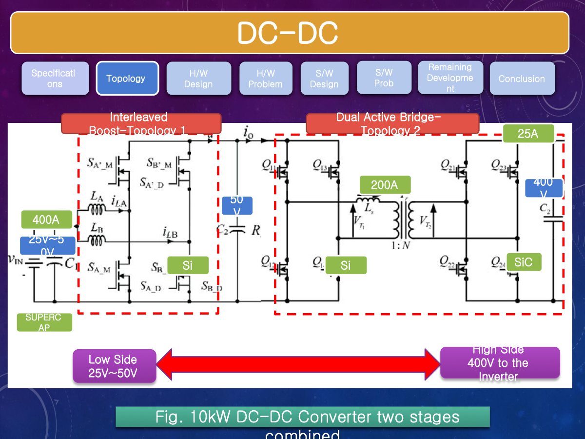
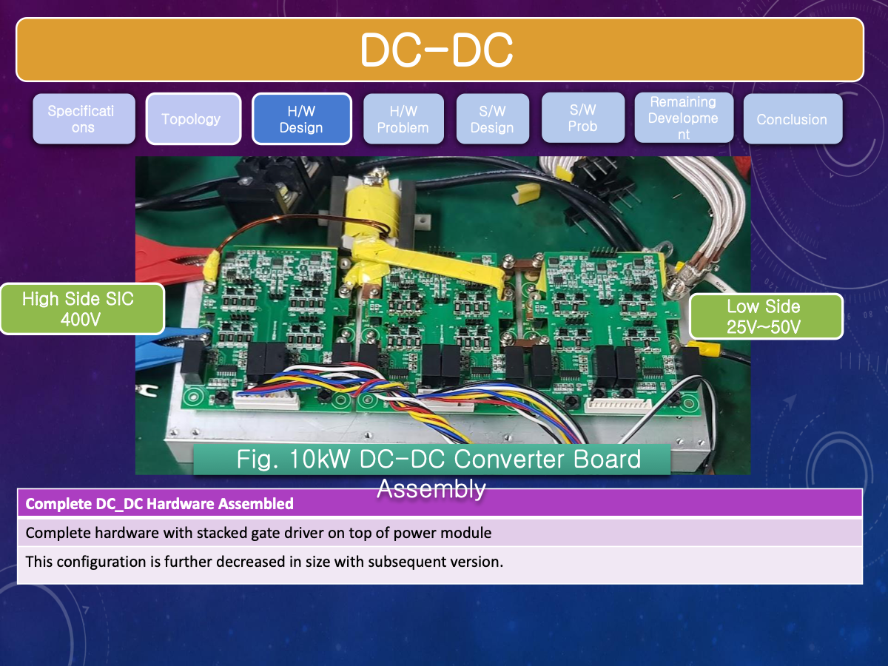
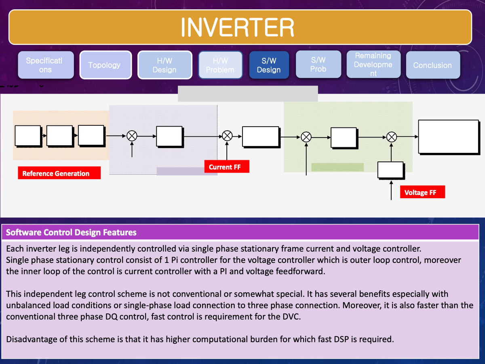

Featured Project
Transformerless DVC 10 kW
A three-phase transformerless dynamic voltage compensator built around a bidirectional supercapacitor-fed DC-DC converter and inverter platform. In this project, I carried out the complete hardware design and controller design for the system.

Complete hardware and controller design
This was not a support role. I was responsible for the complete hardware and controller design of the project. That included translating the system requirements into a practical power-stage architecture, selecting the converter topology, designing the hardware modules, planning sensing and control interfaces, and defining the software control structure for both the DC-DC and inverter sections.
The project demanded design decisions under real industrial constraints: very high low-voltage current, wide voltage conversion ratio, bidirectional power flow, fast transition requirements, and the need to make the platform manufacturable, testable, and scalable toward production.
- Selected and developed the two-stage DC-DC topology for high current and high gain operation.
- Designed the hardware modules, module layout, gate-drive arrangement, and control-board interface.
- Defined the sensing scheme for current, voltage, protection, and system coordination.
- Designed the controller structure for DC-DC boost/buck operation and for the three-phase inverter.
- Analyzed the practical issues blocking production readiness and identified the redesign roadmap.
Architecture
System structure and engineering rationale
DC-DC stage
The DC-DC front end was designed as a two-stage system. An interleaved boost converter handled the low-voltage high-current supercapacitor side, while a dual active bridge handled the high-gain transfer to the 400 V DC link. This choice was driven by the difficulty of achieving the required gain and efficiency with a single-stage approach under 400 A operating conditions.
- Interleaved boost selected to reduce ripple and improve current sharing.
- Dual active bridge selected to support high-gain bidirectional transfer and easier control.
- Architecture designed for both discharge support and charging of the supercapacitor side.
Inverter stage
The inverter side used a three-phase structure designed to operate from the 400 V DC link and support voltage compensation behavior. The control strategy was based on independently controlled legs in the stationary frame, with outer voltage control, inner current control, and feedforward terms to improve dynamic response and flexibility under nonideal load conditions.
- Three-phase inverter platform with LC output filtering.
- Independent leg control suited to non-ideal and unbalanced loading scenarios.
- Controller designed around fast voltage support and seamless operating transitions.
Hardware
What I designed on the hardware side


Hardware design scope
- Designed the power module structure for both DC-DC and inverter sections.
- Worked on PCB/module arrangement, busbar-aware layout, and stacked gate-driver organization.
- Handled practical integration of sensing, gate-drive interconnection, and control-board interfacing.
- Designed around harsh current and voltage constraints, especially on the 25-50 V / 400 A side.
Major hardware constraints
- 400 A low-voltage input current made conduction loss, heating, and current distribution major design drivers.
- High-side gate-driver clearance and long traces increased vulnerability and ringing risk.
- Sensing quality and noise immunity became critical for both control fidelity and protection.
- Switch placement, capacitor placement, and gate-drive distance directly affected reliability.


Controller Design
What I designed on the control side

Controller strategy
On the DC-DC side, the control structure separated boost-mode and buck-mode operation, with voltage regulation at key nodes and bidirectional operation for supercapacitor charging and discharge support. On the inverter side, I designed an independent leg control framework using single-phase stationary-frame current and voltage control loops.
- Boost mode handled voltage build-up toward the 400 V DC link.
- Buck mode supported reverse power flow to charge the supercapacitor side.
- Protection and trip-zone logic were incorporated as part of the controller design problem.
- Feedforward terms were used to improve dynamic behavior in the inverter control structure.
- Controller coordination was designed around mode transition, DC-link regulation, and safe interaction between the storage side and inverter side.
Problems and Solutions
What I had to solve to make the platform practical
The difficulty of this project was not only in drawing the topology. It was in turning demanding system requirements into hardware and control choices that could actually be built and tested.
Problem 1: very high current at the storage side
The supercapacitor interface operated in the 25-50 V range while the system target required transfer to a 400 V DC link. At the low-voltage side, the current could rise toward 400 A. That operating region makes conduction loss, current sharing, magnetic sizing, layout parasitics, and thermal stress dominant design constraints.
- I selected an interleaved boost front end so the current could be distributed across phases instead of forcing one path to carry the full stress.
- I used the dual-active-bridge stage to achieve the required high conversion ratio and bidirectional transfer more cleanly than a single-stage solution.
- I designed the physical module arrangement around short current paths, practical gate-drive routing, and manageable integration of sensing hardware.
Problem 2: fast voltage support with seamless transition
A DVC platform only becomes useful if it can detect grid events quickly and move the load-support function onto the inverter without unstable or visibly poor transient behavior. That requirement pushed the control design beyond steady-state voltage regulation.
- I designed the inverter control around independent leg control in the stationary frame so the system could respond flexibly to practical load conditions.
- I used outer voltage regulation, inner current regulation, and feedforward terms to strengthen dynamic behavior during compensation events.
- I treated transition logic, reference generation, and protection interaction as part of the controller design, not as afterthoughts.
Problem 3: noisy hardware is a control problem too
In this current and switching range, sensing quality, gate-drive distance, switching-node ringing, and board-level parasitics directly affect whether a controller behaves as intended. A mathematically correct controller is not enough if the measurement chain is unreliable.
- I designed the sensing and interface structure with attention to noise sensitivity, signal integrity, and practical protection requirements.
- I identified high-side gate-driver clearance and long-loop issues as major risks for robustness and future productization.
- I used prototype results to define the redesign roadmap rather than treating the first build as the final design.
Problem 4: bidirectional operation needed coordinated control
The platform was not a one-direction booster. It had to discharge the supercapacitor side for support and also reverse the power flow for charging. That means the controller must coordinate operating mode, voltage targets, and protective actions across the full platform.
- I separated boost and buck control behavior so the same hardware could support both discharge and recharge operation.
- I incorporated trip-zone and supervisory behavior into the control structure to keep the platform safe during testing.
- I treated the DC-DC and inverter sections as one coordinated system rather than two isolated converter problems.
Project outcomes
- Completed the prototype-level hardware and controller development for both the DC-DC and inverter sections.
- Achieved a working 10 kW inverter module in inverter mode and established the electrical foundation for the full DVC platform.
- Defined the architecture, sensing paths, control structure, and bidirectional operating logic for the overall system.
- Used experimental observations to identify the specific hardware and layout changes required for a stronger next-generation build.
Why this project matters
This project is a strong representation of my work because it shows full-stack engineering ownership: system architecture, converter hardware, controller design, sensing, protection concerns, practical noise problems, and redesign planning. It demonstrates not only the ability to build working hardware, but also the ability to diagnose why an advanced platform is not yet production-ready and what should be improved.